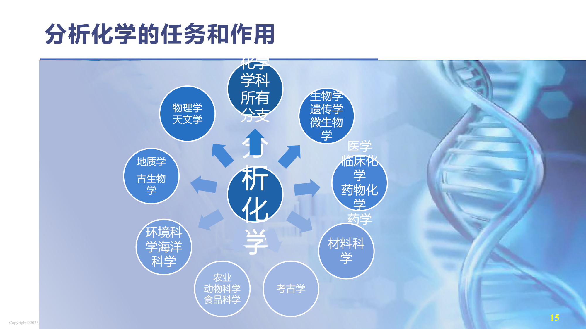
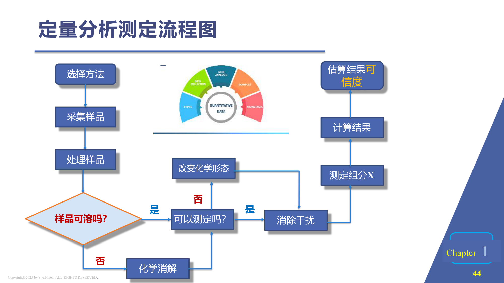
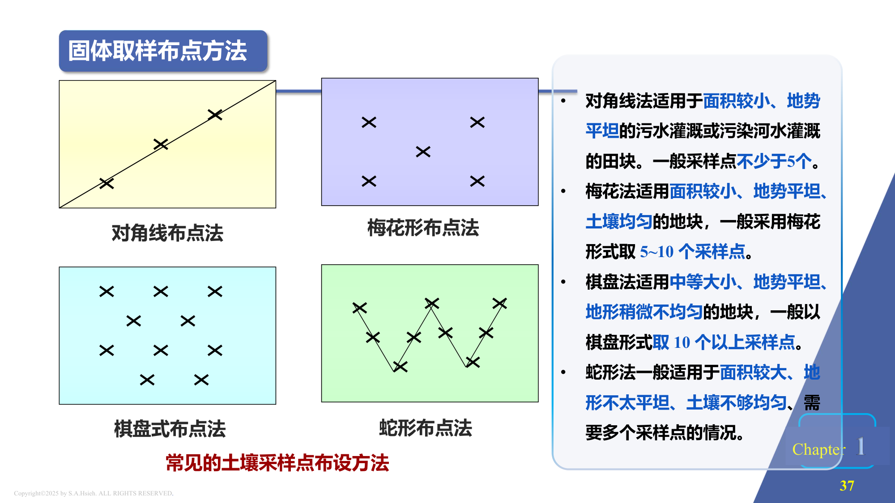
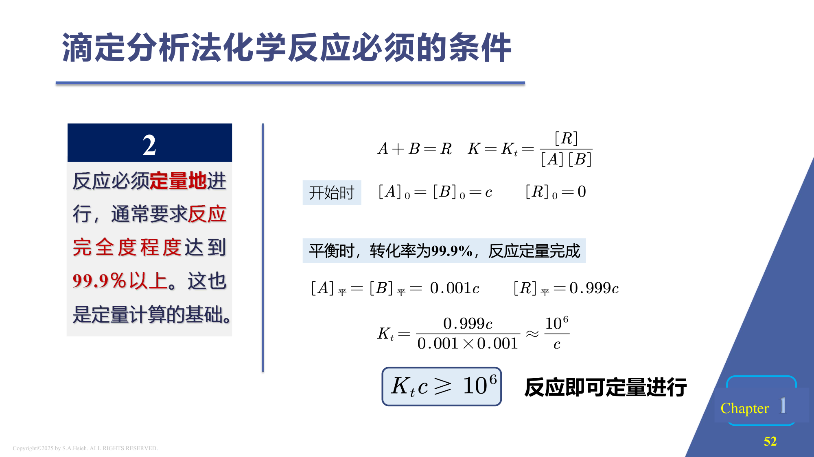
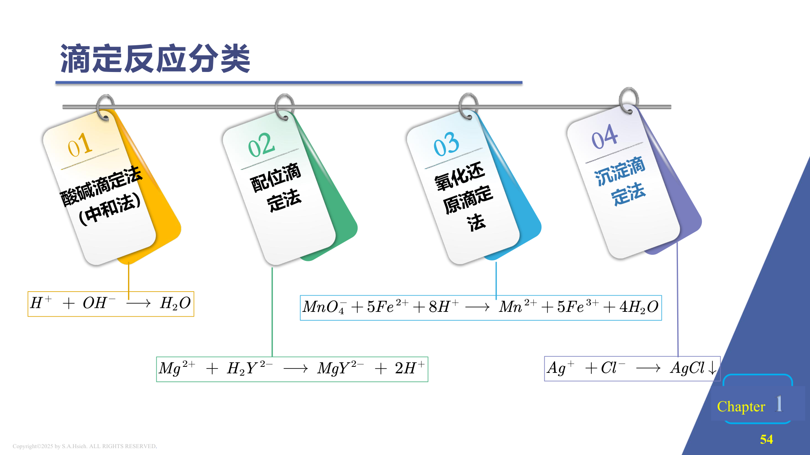
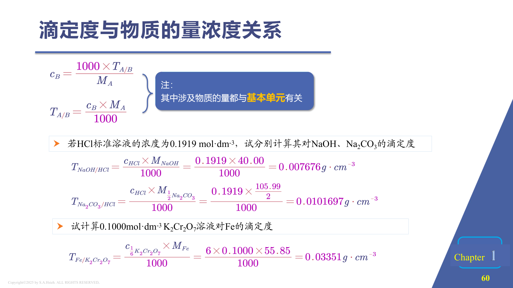
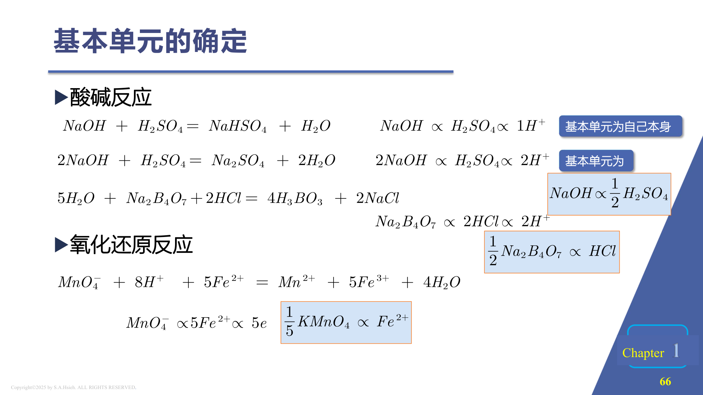
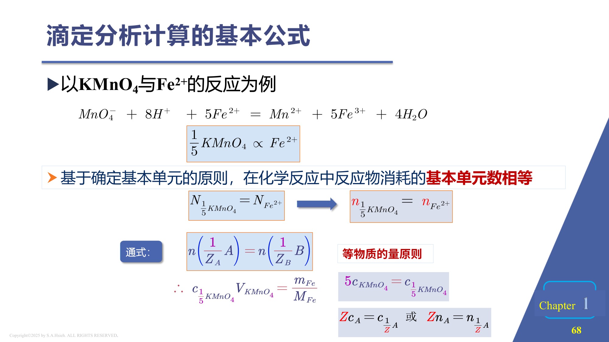

PPT: 分析化学的任务和作用 — 学科交叉示意
分析化学是研究物质化学组成的分析方法及相关理论的一门学科。其主要任务包括：
| 分类 | 方法 | 特点 | 适用 |
|---|---|---|---|
| 化学分析法 | 重量分析法 | 将待测组分转化为沉淀，称量 | 常量组分（>1%） |
| 滴定分析法 | 利用化学反应的计量关系 | 常量组分（>1%） | |
| 仪器分析法 | 光学分析法 | 吸光/发光/散射 | 微量、痕量 |
| 电化学分析法 | 电位/电导/库仑 | 微量、痕量 | |
| 色谱法 | 分离+检测联用 | 复杂混合物 | |
| 质谱法 | 质荷比 | 结构分析 |
| 比较项目 | 重量分析法 | 滴定分析法 | 仪器分析法 |
|---|---|---|---|
| 原理 | 将待测组分转化为难溶化合物，过滤、灼烧、称量 | 用已知浓度的标准溶液与待测组分定量反应 | 测量物质的物理或物理化学性质 |
| 准确度 | 高（相对误差 0.1%~0.2%） | 高（相对误差 0.1%~0.2%） | 较低（相对误差 1%~5%） |
| 灵敏度 | 低 | 低~中 | 高（可达 ppm~ppb 级） |
| 适用含量 | 常量（>1%） | 常量（>1%） | 微量、痕量（<1%） |
| 速度 | 慢（需沉淀、过滤、灼烧） | 快（数分钟完成一次滴定） | 快（可自动化） |
| 设备 | 天平、坩埚 | 滴定管、锥形瓶 | 昂贵仪器 |
| 选择性 | 通过沉淀剂选择性 | 通过反应选择性 | 高（可调波长等参数） |
分析化学的发展经历了从古代到现代的漫长过程：
| 时期 | 里程碑 |
|---|---|
| 古中国、古希腊 | 德谟克利特，原子论的提出；冶金术、长生不老药 |
| 公元前 400 年 | 出现第一个使用天平的试金实验室 |
| 16 世纪 | 拉瓦锡氧气发现，将定量分析引入化学 |
| 18 世纪 | 贝采里马斯创立元素符号，创建重量分析法 |
| 19 世纪末 | 定性手段和定量技术组合 |
| 时期 | 1900-1940 | 1940-1970 | 1970-至今 |
|---|---|---|---|
| 特点 | 经典分析，化学分析为主 | 近代分析，仪器分析为主 | 现代分析，化学计量学为主 |
| 理论 | 热力学、溶液四大平衡 | 物理学、电子学 | 计算机应用 |
| 仪器 | 分析天平 | 光度、极谱、电位、色谱 | 自动化分析仪、联用技术 |
| 分析对象 | 无机化合物 | 有机和无机样品 | 有机、无机、生物及药物样品 |
定义：某一分析方法能够可靠地检测出被测组分的最低浓度或最低量。
不同分析方法的检出限比较（以水质测量中铅的检出限为例）：
| 分析方法 | 检出限量级 |
|---|---|
| 湿化学（滴定/重量） | $10^{-4}$（约 100 mg/L） |
| 火焰原子吸收 | $10^{-6} \sim 10^{-7}$（约 1 mg/L ~ 100 μg/L） |
| 石墨炉原子吸收 | $10^{-8} \sim 10^{-9}$（约 10 μg/L ~ 1 μg/L） |
| ICP-MS | $10^{-11} \sim 10^{-12}$（约 10 ng/L ~ 1 ng/L） |
| 类别 | 试样质量 | 试液体积 | 被测组分含量 |
|---|---|---|---|
| 常量分析 | > 0.1 g | > 10 mL | > 1% |
| 半微量分析 | 0.01 ~ 0.1 g | 1 ~ 10 mL | 0.01% ~ 1% |
| 微量分析 | 0.1 ~ 10 mg | 0.01 ~ 1 mL | 0.001% ~ 0.01% |
| 超微量分析 | < 0.1 mg | < 0.01 mL | < 0.001%（ppm 级） |

PPT: 定量分析测定流程图
最低取样量：$Q = Kd^2$
其中 $Q$ 为最低取样量（kg），$K$ 为缩分常数，$d$ 为样品最大颗粒直径（mm）

PPT: 固体取样布点方法 — 对角线法/梅花形/棋盘式/蛇形
| 布点方法 | 适用条件 | 采样点数 |
|---|---|---|
| 对角线法 | 面积较小、地势平坦的污水灌溉或河水灌溉田块 | 一般不少于 5 个 |
| 梅花形法 | 面积较小、地势平坦、土壤均匀的地块 | 5~10 个 |
| 棋盘式法 | 中等大小、地势平坦、地形稍微不均匀 | 10 个以上 |
| 蛇形法 | 面积较大、地形不平坦、土壤不够均匀 | 需要更多采样点 |
根据水体采集形式可分为瞬时采样和混合采样。混合采样又分为：
| 采样方法 | 适用情况 |
|---|---|
| 时间积分采样 | 采集一定时间内某一特定深度的混合水样 |
| 深度积分采样 | 采集某特定断面垂线表层和底层之间，或沿垂线不同深度的混合水样 |
| 面积积分采样 | 采集横断面上各采样点的混合水样 |
| 方法 | 溶剂/熔剂 | 适用范围 | 注意事项 |
|---|---|---|---|
| 酸溶法（湿法） | HCl | 金属、碳酸盐、部分氧化物 | 非氧化性酸 |
| HNO3 | Cu、Ag 等不活泼金属、硫化物 | 氧化性酸，不溶Au/Pt | |
| H2SO4 | 矿石、合金（热浓） | 高沸点，脱水性 | |
| HF | 硅酸盐（SiO2） | 用塑料/铂器皿 | |
| HClO4 | 有机物、合金钢 | 强氧化性，注意安全 | |
| 王水（HCl:HNO3=3:1） | Au、Pt、难溶合金 | 现配现用 | |
| 碱溶法 | NaOH | 两性金属（Al、Zn、Sn） | 用镍坩埚/铁坩埚 |
| 熔融法（干法） | Na2CO3 | 硅酸盐矿物 | 铂坩埚 |
| NaOH / Na2O2 | 铬铁矿、锡石 | 银坩埚/镍坩埚 | |
| K2S2O7 / KHSO4 | 不溶于酸的氧化物（Al2O3、Fe2O3） | 酸性熔剂，石英坩埚 |
湿存水的处理方法（针对不同性质的试样）：
第一步：最少试样量 $Q = Kd^2 = 0.2 \times 6^2 = 7.2$ kg
根据四分法处理试样方式，从初始 20 kg 开始：缩分一次为 10 kg，缩分两次为 5 kg。因为 5 kg < 7.2 kg，所以只能缩分一次，留下试样量为 10 kg。
第二步：破碎过 10 号筛，$d = 2.00$ mm 时：
$Q = Kd^2 = 0.2 \times 2^2 = 0.8$ kg
从 10 kg 开始缩分：$10 \times \left(\dfrac{1}{2}\right)^n \geq 0.8$
解得 $n \leq 3.6$，故 $n = 3$。可以再缩分三次。
| 表示方式 | 定义 | 公式 |
|---|---|---|
| 质量分数 $w$ | 被测组分质量占试样质量的百分比 | $w = \dfrac{m_{\text{被测}}}{m_{\text{试样}}} \times 100\%$ |
| 物质的量浓度 $c$ | 单位体积溶液中溶质的物质的量 | $c = \dfrac{n}{V}$（mol/L） |
| 质量浓度 $\rho$ | 单位体积溶液中溶质的质量 | $\rho = \dfrac{m}{V}$（g/L） |
| 体积分数 $\varphi$ | 气体分析常用 | $\varphi = \dfrac{V_i}{V_{\text{total}}} \times 100\%$ |
| ppm / ppb | 百万分率/十亿分率 | $1\text{ ppm} = 1\text{ mg/kg} = 1\text{ mg/L}$（稀溶液） |

PPT: 滴定反应条件 — Kc ≥ 106
| 术语 | 英文 | 定义 |
|---|---|---|
| 滴定 | Titration | 将已知浓度的标准溶液从滴定管中逐滴加入到被测溶液中，直到反应恰好完全的操作过程 |
| 标准溶液 | Standard solution | 已知准确浓度的溶液，用于滴定被测物质 |
| 化学计量点 | Stoichiometric point (sp) | 加入的标准溶液与被测组分恰好按化学计量关系完全反应的那一点（理论点） |
| 滴定终点 | End point (ep) | 指示剂变色（或仪器信号突变）时停止滴定的那一点（实验观测点） |
| 指示剂 | Indicator | 能在化学计量点附近发生颜色变化或其他可观察变化的试剂 |
| 滴定误差 | Titration error ($E_t$) | 滴定终点与化学计量点不一致引起的系统误差 |
| 比较项 | 化学计量点 (sp) | 滴定终点 (ep) |
|---|---|---|
| 性质 | 理论值，由化学反应的计量关系决定 | 实验观测值，由指示剂变色决定 |
| 是否可直接观察 | 不能直接观察 | 可以直接观察（颜色变化） |
| 是否唯一 | 唯一确定 | 与指示剂的选择有关 |
| 关系 | 理想情况下 ep 尽量接近 sp；二者之差即为滴定误差 $E_t$ | |
选择指示剂的原则：使指示剂的变色点尽可能接近化学计量点，从而使 $E_t$ 尽可能小。
对于反应 $A + B = R$，平衡常数 $K = K_c = \dfrac{[R]}{[A][B]}$
初始：$[A]_0 = [B]_0 = c$，$[R]_0 = 0$
平衡时（转化率 99.9%）：
$[A]_* = [B]_* = 0.001c$，$[R]_* = 0.999c$
代入平衡常数表达式：
$$K_c = \frac{0.999c}{0.001c \times 0.001c} \approx \frac{10^6}{c}$$当 $c \leq 1$ mol/L 时（滴定分析常见浓度范围），要使反应完全度 $\geq 99.9\%$，则需要：
$$\boxed{K_c \geq 10^6}$$这也是定量计算的基础。$K_c$ 越大，反应越完全，滴定误差越小。
| 类型 | 反应本质 | 典型标准溶液 | 常用指示剂 | 典型应用举例 |
|---|---|---|---|---|
| 酸碱滴定法 | 质子转移（$\text{H}^+$ 传递） | HCl, NaOH | 酚酞、甲基橙、甲基红 | 测定食醋中醋酸含量；测定纯碱中 Na2CO3 含量；测定混合碱（NaOH + Na2CO3） |
| 配位滴定法 | 配位反应（形成螯合物） | EDTA (Na2H2Y) | 铬黑 T (EBT)、二甲酚橙 (XO)、钙指示剂 | 测定水的硬度（Ca2+ + Mg2+）；测定矿石中 Fe3+、Al3+、Zn2+ |
| 氧化还原滴定法 | 电子转移 | KMnO4, K2Cr2O7, I2/Na2S2O3, Ce(SO4)2 | 自身指示剂（KMnO4）、淀粉（碘量法）、二苯胺磺酸钠 | 测定 Fe 含量（K2Cr2O7 法）；测定 H2O2（KMnO4 法）；测定 Cu（碘量法） |
| 沉淀滴定法 | 生成难溶沉淀 | AgNO3 | K2CrO4（莫尔法）、铁铵矾（佛尔哈德法）、荧光黄（法扬司法） | 测定 NaCl 含量；测定自来水中 Cl−；测定银合金中 Ag |

PPT: 四大滴定反应分类
将标准溶液直接滴入被测物质溶液中进行滴定。这是最简单、最常用的滴定方式。
条件：反应必须满足滴定分析的四个基本要求（定量、快速、有终点指示方法、无干扰）。
先向被测物质中加入已知量且过量的标准溶液 A，使之与被测物质完全反应后，再用另一种标准溶液 B 滴定剩余的 A。
适用情况：
用适当试剂与被测物质反应，使其定量地释放出另一种可以滴定的物质，然后对释放出的物质进行滴定。
适用情况：被测物质不能与标准溶液直接发生定量反应，但可以通过间接方式释放出可滴定的物质。
将不能直接滴定的物质，通过化学反应转化为另一种可以滴定的物质，然后进行滴定。
与置换滴定的区别：间接滴定法中被测物质本身发生了化学转化；置换滴定法中被测物质与试剂反应释放出第三种物质。
| 滴定方式 | 典型例子 | 使用原因 |
|---|---|---|
| 返滴定法 | 测 Al3+（加过量 EDTA，回滴） | 反应速度较慢或待测物是固体（条件 2 不满足） |
| 置换滴定法 | 测 I−（置换出 I2 后用 Na2S2O3 滴定） | 没有定量关系或有副反应（条件 1、条件 2 不满足） |
| 间接滴定法 | 氧化还原法测 Ca2+ | 被测物不能直接起滴定反应 |
直接滴定法是最简便、最常用、最基本、引入误差最少的方法——能满足滴定分析所有要求的反应均应优先使用直接滴定。

PPT: 滴定度与物质的量浓度关系
| 基准物质 | 化学式 | $M$ (g/mol) | 干燥条件 | 标定对象 | 备注 |
|---|---|---|---|---|---|
| 无水碳酸钠 | Na2CO3 | 105.99 | 270~300 °C | HCl | 低温干燥不充分（含 NaHCO3） |
| 草酸钠 | Na2C2O4 | 134.00 | 105~110 °C | KMnO4 | 注意避免超过 200°C 分解 |
| 重铬酸钾 | K2Cr2O7 | 294.18 | 140~180 °C | Na2S2O3、FeSO4 | 可直接配制标准溶液 |
| 碳酸钙 | CaCO3 | 100.09 | 110 °C | EDTA | 需用 HCl 溶解后再标定 |
| 金属锌 | Zn | 65.38 | 表面擦净即可 | EDTA | 溶于稀 HCl 后标定 |
| 邻苯二甲酸氢钾 (KHP) | KHC8H4O4 | 204.22 | 110~120 °C | NaOH | $M$ 较大，称量误差小 |
| 三羟甲基氨基甲烷 (THAM) | (CH2OH)3CNH2 | 121.14 | 100~105 °C | HCl | 碱性基准物质 |
| 氧化锌 | ZnO | 81.38 | 800 °C | EDTA | 灼烧除去 ZnCO3 |
| 氯化钠 | NaCl | 58.44 | 500~600 °C | AgNO3 | 沉淀滴定基准物质 |
适用条件：溶质本身就是基准物质（如 K2Cr2O7）。
操作步骤：
浓度计算：$c = \dfrac{m}{M \times V}$（$V$ 为容量瓶体积，单位 L）
适用条件：溶质不能作为基准物质。例如 NaOH（吸水吸 CO2）、HCl（易挥发）、KMnO4（含 MnO2 杂质）。
操作步骤：
配制：用量筒量取约 100 mL 饱和 NaOH 溶液（去除 Na2CO3 沉淀），倒入 1000 mL 塑料瓶中，加入新煮沸放冷的去离子水稀释至约 1000 mL，摇匀。此溶液浓度约为 0.1 mol/L。
标定：准确称取在 110°C 干燥至恒重的 KHP 约 0.4~0.5 g（三份），溶于 50 mL 水中，加酚酞指示剂 2 滴，用 NaOH 溶液滴定至溶液呈浅粉色且 30 s 内不褪色，记录消耗 NaOH 体积。
反应：$\text{KHC}_8\text{H}_4\text{O}_4 + \text{NaOH} \rightarrow \text{KNaC}_8\text{H}_4\text{O}_4 + \text{H}_2\text{O}$（1:1 反应）
$$c_{\text{NaOH}} = \frac{m_{\text{KHP}}}{M_{\text{KHP}} \times V_{\text{NaOH}}} = \frac{m_{\text{KHP}}}{204.22 \times V_{\text{NaOH}}}$$例如：称取 KHP 0.4596 g，消耗 NaOH 22.50 mL，则：
$$c_{\text{NaOH}} = \frac{0.4596}{204.22 \times 0.02250} = 0.1000 \text{ mol/L}$$配制：用量筒量取浓 HCl（约 12 mol/L）约 8.3 mL，缓慢加入约 1000 mL 蒸馏水中，搅拌均匀。此溶液浓度约为 0.1 mol/L。
标定：准确称取在 270~300°C 干燥至恒重的无水 Na2CO3 约 0.13~0.15 g（三份），溶于 50 mL 水中，加甲基橙指示剂 2 滴，用 HCl 溶液滴定至溶液由黄色变为橙色（pH ≈ 3.9），记录消耗 HCl 体积。
反应：$\text{Na}_2\text{CO}_3 + 2\text{HCl} \rightarrow 2\text{NaCl} + \text{H}_2\text{O} + \text{CO}_2\uparrow$
$$c_{\text{HCl}} = \frac{2 \times m_{\text{Na}_2\text{CO}_3}}{M_{\text{Na}_2\text{CO}_3} \times V_{\text{HCl}}} = \frac{2m}{105.99 \times V}$$例如：称取 Na2CO3 0.1325 g，消耗 HCl 25.00 mL，则：
$$c_{\text{HCl}} = \frac{2 \times 0.1325}{105.99 \times 0.02500} = \frac{0.2650}{2.650} = 0.1000 \text{ mol/L}$$在滴定分析中，选择标准溶液浓度大小的依据包括：

PPT: 基本单元的确定 — 酸碱反应与氧化还原反应

PPT: 滴定分析计算基本公式 — 等物质的量原则
定义：在指定的化学反应中，物质的基本单元（$\dfrac{1}{z}A$）是确定的，不能随意选择。同一种物质在不同的反应中，它的基本单元也是不一样的。
基本单元为自己本身（即转移 1 个质子对应 1 个基本单元）：
基本单元由电子转移数决定：
$\text{MnO}_4^- + 8\text{H}^+ + 5\text{Fe}^{2+} = \text{Mn}^{2+} + 5\text{Fe}^{3+} + 4\text{H}_2\text{O}$
MnO4− 得到 5 个电子，Fe2+ 失去 1 个电子，因此：
基本单元：$\dfrac{1}{5}\text{KMnO}_4 \sim \text{Fe}^{2+}$
基本单元确定为相当于一个阳离子的反应物粒子（粒子、分子）的特定组合。
基本单元 $\dfrac{1}{z_A}A$ 的摩尔质量：
$$\boxed{M\!\left(\frac{1}{z_A}A\right) = \frac{1}{z_A} M_A}$$例如：
物质 A 的质量、摩尔质量和物质的量之间的关系：
$$m_A = n_A \cdot M_A = n_{\frac{1}{z_A}A} \cdot M_{\frac{1}{z_A}A}$$虽然表达方式不同，但其物质的质量是相同的。
滴定分析计算的核心原则：在化学计量点时，标准溶液与被测物质的基本单元数相等。
对于反应 $aA + bB \rightarrow \text{products}$：
$$\frac{n_A}{a} = \frac{n_B}{b}$$用基本单元表示，等物质的量原则为：
$$\boxed{n\!\left(\frac{1}{z_A}A\right) = n\!\left(\frac{1}{z_B}B\right)}$$即：
$$\frac{c_A V_A}{a} = \frac{c_B V_B}{b}$$也可以用化学计量因子 $f$ 来表示。若用标准溶液 T 滴定待测物 A，反应中 $a$ mol A ~ $b$ mol T，则：
$$n_A = \frac{a}{b} \cdot n_T = f \cdot n_T$$其中 $f = \dfrac{a}{b}$ 为化学计量因子。
1. 标准溶液浓度互算（按化学计量关系）：
$$\frac{c_A V_A}{a} = \frac{c_B V_B}{b}$$2. 等物质的量关系（1:1 反应）：
$$c_A V_A = c_B V_B$$3. 被测组分质量分数（通用公式）：
$$w = \frac{c_T \cdot V_T \cdot f \cdot M_A}{m_s \times 1000} \times 100\%$$其中：$c_T$ 为标准溶液浓度（mol/L），$V_T$ 为消耗标准溶液体积（mL），$f$ 为化学计量因子，$M_A$ 为被测组分摩尔质量（g/mol），$m_s$ 为试样质量（g）。分母中 1000 是将 mL 转换为 L。
4. 体积用 L 时的简化形式：
$$w = \frac{c_T \cdot V_T \cdot f \cdot M_A}{m_s} \times 100\%$$（此时 $V_T$ 单位为 L）
5. 滴定度（Titer）：
$$T_{A/B} = c_B \cdot M_A \cdot \frac{a}{b} \times 10^{-3}$$含义：每毫升标准溶液 B 相当于被测物质 A 的质量（g/mL）
则质量分数：$w = \dfrac{T_{A/B} \cdot V}{m_s} \times 100\%$
滴定度 $T_{A/B}$ 与标准溶液浓度 $c_B$ 的换算公式：
$$c_B = \frac{1000 \times T_{A/B}}{M_A} \qquad T_{A/B} = \frac{c_B \times M_A}{1000}$$注意：其中涉及的物质的量都与基本单元有关！
对 NaOH：HCl + NaOH 为 1:1 反应
$$T_{\text{NaOH/HCl}} = \frac{c_{\text{HCl}} \times M_{\text{NaOH}}}{1000} = \frac{0.1919 \times 40.00}{1000} = 0.007676 \text{ g/cm}^3$$对 Na2CO3：2HCl + Na2CO3，1 mol Na2CO3 ~ 2 mol HCl，基本单元 $\dfrac{1}{2}\text{Na}_2\text{CO}_3$
$$T_{\text{Na}_2\text{CO}_3\text{/HCl}} = \frac{c_{\text{HCl}} \times M_{\frac{1}{2}\text{Na}_2\text{CO}_3}}{1000} = \frac{0.1919 \times \frac{105.99}{2}}{1000} = 0.01697 \text{ g/cm}^3$$反应：$\text{Cr}_2\text{O}_7^{2-} + 6\text{Fe}^{2+} + 14\text{H}^+ \rightarrow 2\text{Cr}^{3+} + 6\text{Fe}^{3+} + 7\text{H}_2\text{O}$
基本单元：$\dfrac{1}{6}\text{K}_2\text{Cr}_2\text{O}_7 \sim \text{Fe}^{2+}$，所以 1 mol K2Cr2O7 ~ 6 mol Fe
$$T_{\text{Fe/K}_2\text{Cr}_2\text{O}_7} = \frac{c_{\text{K}_2\text{Cr}_2\text{O}_7} \times 6 \times M_{\text{Fe}}}{1000} = \frac{0.1000 \times 6 \times 55.85}{1000} = 0.03351 \text{ g/cm}^3$$反应：$\text{NaOH} + \text{HCl} \rightarrow \text{NaCl} + \text{H}_2\text{O}$（1:1 反应）
由 $c_A V_A = c_B V_B$：
$$c_{\text{HCl}} = \frac{c_{\text{NaOH}} \cdot V_{\text{NaOH}}}{V_{\text{HCl}}} = \frac{0.1000 \times 22.50}{20.00} = 0.1125 \text{ mol/L}$$反应：$\text{H}_2\text{C}_2\text{O}_4 + 2\text{NaOH} \rightarrow \text{Na}_2\text{C}_2\text{O}_4 + 2\text{H}_2\text{O}$
化学计量关系：1 mol H2C2O4 ~ 2 mol NaOH，故 $f = \dfrac{1}{2}$
$$n_{\text{H}_2\text{C}_2\text{O}_4} = \frac{1}{2} n_{\text{NaOH}} = \frac{1}{2} \times 0.1000 \times 0.04000 = 0.002000 \text{ mol}$$ $$m_{\text{H}_2\text{C}_2\text{O}_4 \cdot 2\text{H}_2\text{O}} = 0.002000 \times 126.07 = 0.2521 \text{ g}$$ $$w = \frac{0.2521}{0.6000} \times 100\% = 42.02\%$$反应：$\text{Na}_2\text{CO}_3 + 2\text{HCl} \rightarrow 2\text{NaCl} + \text{H}_2\text{O} + \text{CO}_2\uparrow$
化学计量关系：$n_{\text{Na}_2\text{CO}_3} = \frac{1}{2} n_{\text{HCl}}$
$$w = \frac{\frac{1}{2} \times c_{\text{HCl}} \times V_{\text{HCl}} \times M_{\text{Na}_2\text{CO}_3}}{m_s} \times 100\%$$ $$= \frac{\frac{1}{2} \times 0.2000 \times 0.02400 \times 106.0}{0.5000} \times 100\% = 50.88\%$$反应 1：$\text{CaCO}_3 + 2\text{HCl} \rightarrow \text{CaCl}_2 + \text{H}_2\text{O} + \text{CO}_2\uparrow$
反应 2：$\text{NaOH} + \text{HCl} \rightarrow \text{NaCl} + \text{H}_2\text{O}$
HCl 总量：$n_{\text{HCl, 总}} = 0.5000 \times 0.05000 = 0.02500 \text{ mol}$
NaOH 消耗（= 剩余 HCl）：$n_{\text{HCl, 剩}} = n_{\text{NaOH}} = 0.2500 \times 0.01600 = 0.004000 \text{ mol}$
与 CaCO3 反应的 HCl：$n_{\text{HCl, 反应}} = 0.02500 - 0.004000 = 0.02100 \text{ mol}$
由计量关系：$n_{\text{CaCO}_3} = \dfrac{1}{2} n_{\text{HCl, 反应}} = \dfrac{0.02100}{2} = 0.01050 \text{ mol}$
$$w_{\text{CaCO}_3} = \frac{0.01050 \times 100.09}{0.5000} \times 100\% = \frac{1.051}{0.5000} \times 100\% = 210.2\%$$结果 > 100%，说明题目数据有误。重新检查：若消耗 NaOH 40.00 mL，则：
$n_{\text{HCl, 剩}} = 0.2500 \times 0.04000 = 0.01000$ mol
$n_{\text{HCl, 反应}} = 0.02500 - 0.01000 = 0.01500$ mol
$n_{\text{CaCO}_3} = 0.01500/2 = 0.007500$ mol
$$w_{\text{CaCO}_3} = \frac{0.007500 \times 100.09}{0.5000} \times 100\% = \frac{0.7507}{0.5000} \times 100\% = 150.1\%$$仍然偏高。实际考试中数据会合理，关键掌握计算框架：
其中 $c_1V_1$ 为加入的标准溶液物质的量，$c_2V_2$ 为返滴定消耗的物质的量。
$n_{\text{HCl, 总}} = 0.5000 \times 0.05000 = 0.02500$ mol
$n_{\text{HCl, 剩余}} = n_{\text{NaOH}} = 0.5000 \times 0.01000 = 0.005000$ mol
$n_{\text{HCl, 与 CaCO}_3\text{ 反应}} = 0.02500 - 0.005000 = 0.02000$ mol
$n_{\text{CaCO}_3} = \frac{1}{2} \times 0.02000 = 0.01000$ mol
$$w = \frac{0.01000 \times 100.09}{1.000} \times 100\% = \frac{1.001}{1.000} \times 100\% = 100.1\%$$（接近 100%，说明试样几乎是纯 CaCO3）
涉及三步反应：
1. 沉淀：$\text{Ca}^{2+} + \text{C}_2\text{O}_4^{2-} \rightarrow \text{CaC}_2\text{O}_4\downarrow$（1:1）
2. 溶解：$\text{CaC}_2\text{O}_4 + \text{H}_2\text{SO}_4 \rightarrow \text{CaSO}_4 + \text{H}_2\text{C}_2\text{O}_4$（1:1）
3. 滴定：$5\text{H}_2\text{C}_2\text{O}_4 + 2\text{KMnO}_4 + 3\text{H}_2\text{SO}_4 \rightarrow 2\text{MnSO}_4 + \text{K}_2\text{SO}_4 + 10\text{CO}_2\uparrow + 8\text{H}_2\text{O}$
总计量关系：1 Ca ~ 1 CaC2O4 ~ 1 H2C2O4，而 5 H2C2O4 ~ 2 KMnO4
所以：$n_{\text{Ca}} = n_{\text{H}_2\text{C}_2\text{O}_4} = \dfrac{5}{2} n_{\text{KMnO}_4}$
$$n_{\text{KMnO}_4} = 0.02000 \times 0.02500 = 0.0005000 \text{ mol}$$ $$n_{\text{Ca}} = \frac{5}{2} \times 0.0005000 = 0.001250 \text{ mol}$$ $$w_{\text{Ca}} = \frac{0.001250 \times 40.08}{0.5000} \times 100\% = \frac{0.05010}{0.5000} \times 100\% = 10.02\%$$酚酞终点之前的反应：
甲基橙终点之前的反应：
设第二段消耗 HCl 为 $V_2 = 5.000$ mL，则 $n_{\text{NaHCO}_3} = c \cdot V_2 = 0.5000 \times 0.005000 = 0.002500$ mol
由于 1 mol Na2CO3 生成 1 mol NaHCO3：
$n_{\text{Na}_2\text{CO}_3} = n_{\text{NaHCO}_3} = 0.002500$ mol
第一段中，Na2CO3 消耗的 HCl = $0.002500$ mol，与 NaOH 反应的 HCl = $(0.5000 \times 0.03500) - 0.002500 = 0.01750 - 0.002500 = 0.01500$ mol
$n_{\text{NaOH}} = 0.01500$ mol
$$w_{\text{NaOH}} = \frac{0.01500 \times 40.00}{1.200} \times 100\% = \frac{0.6000}{1.200} \times 100\% = 50.00\%$$ $$w_{\text{Na}_2\text{CO}_3} = \frac{0.002500 \times 106.0}{1.200} \times 100\% = \frac{0.2650}{1.200} \times 100\% = 22.08\%$$第一章的核心概念在后续 Quiz 和期末考试中反复出现。以下是常考的基本概念辨析：
| 比较项 | 系统误差（Systematic Error） | 随机误差（Random Error） |
|---|---|---|
| 方向性 | 具有单向性（偏高或偏低），有一定规律 | 正负误差出现的概率相等，大小不定 |
| 可否消除 | 可以通过校正方法消除或减小 | 不能消除，只能通过增加测定次数减小 |
| 来源 | 方法误差、仪器误差、试剂误差、操作误差 | 测量过程中不可控的微小波动 |
| 影响指标 | 影响准确度（accuracy） | 影响精密度（precision） |
| 统计特征 | 不遵从正态分布 | 遵从正态分布（高斯分布） |
虽然缓冲溶液和质子平衡方程（PBE）主要在第三章讨论，但其基础概念源于第一章：
有效数字是第一章的延伸知识点，在期末考试中反复出现。
有效数字运算规则：
EDTA 与 Ca2+ 反应为 1:1
$$n_{\text{Ca}^{2+}} = n_{\text{EDTA}} = 0.1000 \times 0.02000 = 0.002000 \text{ mol}$$ $$c_{\text{Ca}^{2+}} = \frac{0.002000}{0.02500} = 0.08000 \text{ mol/L}$$ $$\rho_{\text{Ca}^{2+}} = 0.08000 \times 40.08 \times 1000 = 3206 \text{ mg/L}$$Na2CO3 是碱性基准物质，用于标定酸（如 HCl）。要标定碱（NaOH），需要使用酸性基准物质。KHP（邻苯二甲酸氢钾）是一元弱酸，$M$ 大（204.22 g/mol），容易称量准确，且反应 1:1 简单明确，是标定 NaOH 的最佳选择。
| 公式名称 | 公式 | 适用场景 |
|---|---|---|
| 等物质的量关系 | $\dfrac{c_AV_A}{a} = \dfrac{c_BV_B}{b}$ | 所有滴定计算的起点 |
| 质量分数（直接法） | $w = \dfrac{c_TV_T \cdot f \cdot M_A}{m_s \times 1000} \times 100\%$ | 直接滴定求含量 |
| 返滴定法 | $n_{\text{被测}} = \dfrac{c_1V_1 - c_2V_2}{\text{计量系数}}$ | 加入过量标准液后回滴 |
| 滴定度 | $T_{A/B} = c_B \cdot M_A \cdot \dfrac{a}{b} \times 10^{-3}$ | 工业分析快速计算 |
| 滴定度求含量 | $w = \dfrac{T_{A/B} \cdot V}{m_s} \times 100\%$ | 已知滴定度时 |
| 标定浓度 | $c = \dfrac{m_{\text{基准}}}{M_{\text{基准}} \cdot V \cdot \text{计量系数}}$ | 用基准物质标定 |
| 等基本单元数 | $n\!\left(\dfrac{1}{z_A}A\right) = n\!\left(\dfrac{1}{z_B}B\right)$ | 基本单元表示的等物质的量规则 |
| 基本单元摩尔质量 | $M\!\left(\dfrac{1}{z_A}A\right) = \dfrac{1}{z_A}M_A$ | 确定基本单元后计算摩尔质量 |
| 滴定度与浓度互算 | $c_B = \dfrac{1000 \times T_{A/B}}{M_A}$ | 滴定度换算为浓度 |
| 定量完成条件 | $K_c \geq 10^6$ | 反应完全度 $\geq 99.9\%$ 的条件 |